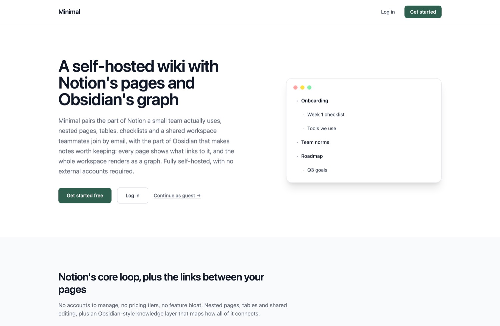
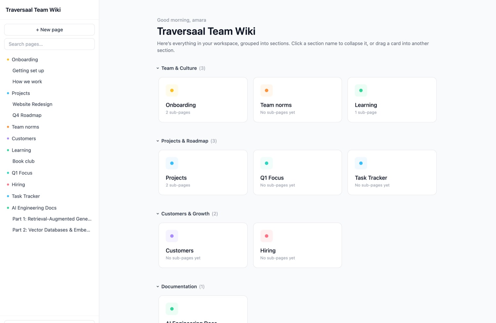
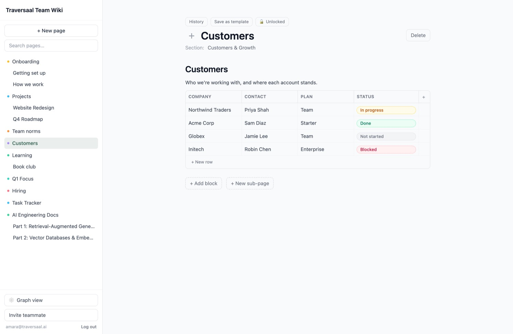
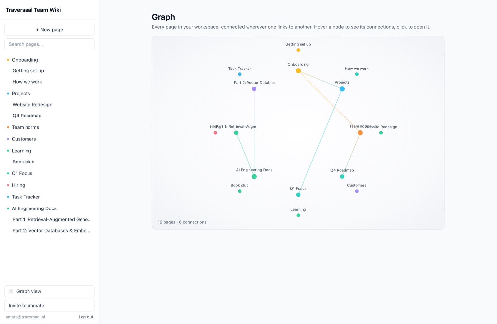
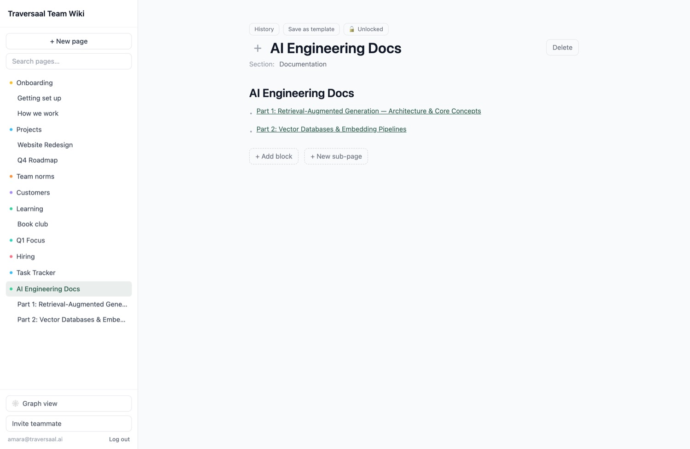
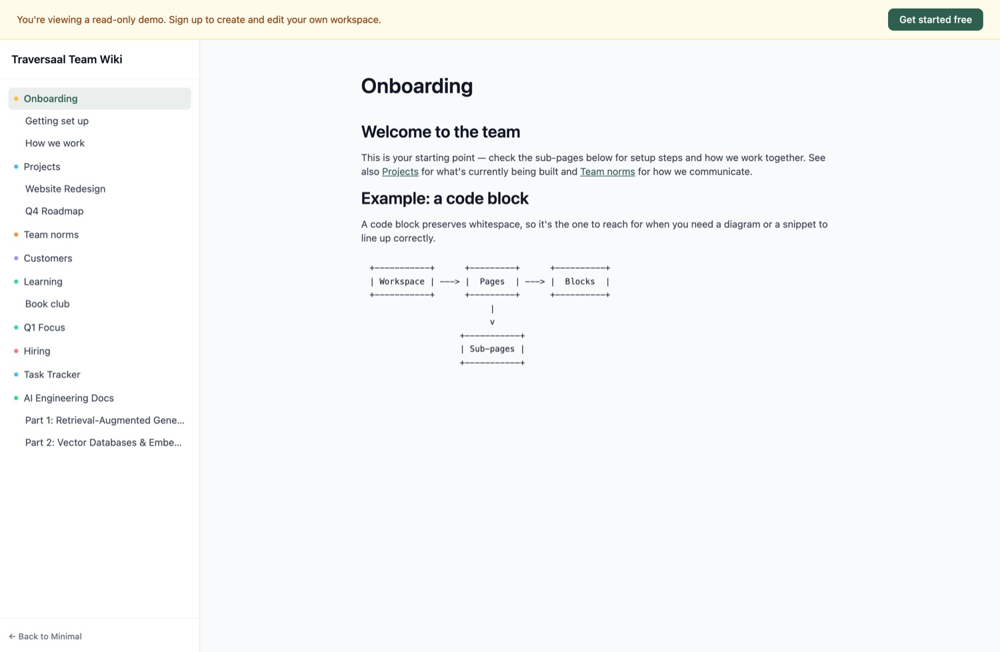

Notion meets Obsidian: a self-hosted workspace with Notion's editing model and Obsidian's knowledge layer, scoped through Sprint Zero and pushed well past the MVP. This is the run verified end to end on a clean clone.
Two reference products, not one. Notion supplies the editing model. Obsidian supplies the way the pages connect. Minimal is the overlap, self-hosted.
The Notion half is what Sprint Zero scoped and built first, against notion.so as the stated reference: accounts, a shared workspace, nested pages, blocks, invites. Twelve amendments later it also has real tables with a row detail view, a form builder, row comments, page locking, presence, templates, and a sectioned dashboard. As a small self-hosted Notion it is faithful.
The Obsidian half is what makes it a different product rather than a clone. Every page carries a Linked mentions panel, and the whole workspace renders as a graph. Obsidian's central idea is that the links between your notes are themselves the valuable structure, and that is the idea Notion does not give you.
The neat part is how cheaply the second half sits on the first. Neither backlinks nor the graph needed new storage. Internal links already existed as plain substrings inside block content, so both are computed live by scanning what Notion-style editing had already produced. One product's data model, read through the other product's lens.
That is the summary. The rest of this document is what I could confirm by running it.
Seven documents in docs/, each feeding the next. This is the Sprint Zero pipeline artifact, and it is the reason the build stayed coherent across twelve rounds of additions.
| File | What it fixes | Size |
|---|---|---|
| scope.md | Reference product, stack, build level, the core loop, and an explicit exclude list | 2.1 KB |
| reference-brief.md | What Notion actually does, as the thing being matched | 2.8 KB |
| prd.md | The product requirements the build was held to | 8.0 KB |
| user-stories.md | Stories with acceptance criteria | 9.9 KB |
| api-contract.md | The authoritative route-by-route reference, now 31 endpoints | 17.1 KB |
| decisions.md | Every scope cut and every later amendment, each with its reasoning | 24.6 KB |
| build-record.md | What got built, in the order it happened | 5.7 KB |
decisions.md is the one to read. It is the largest file in the set, and it is larger than the PRD for a good reason: on a build that kept changing, the record of why outlived the record of what.
Everything below is the seeded demo workspace on a clean clone, captured while running. No mockups.






/demo. The same seeded workspace, read-only, no account. It has its own two endpoints rather than reusing the authenticated ones.An Express API over SQLite, with a self-issued JWT. server/index.js is 1,622 lines and carries all of it. The route surface grew from the MVP core loop to this:
| Group | Routes | Came from |
|---|---|---|
| Auth and workspace | 5 | Initial build |
| Pages and blocks | 10 | Initial build, plus duplicate, activity and presence |
| Tables | 7 | Amendment: a real table block |
| Row comments | 2 | Amendment: the ten-item batch |
| Form responses | 2 | Amendment: the ten-item batch |
| Knowledge layer | 2 | Amendment: backlinks and graph |
| Guest demo | 3 | Amendment: continue as guest |
Both suites were run today against a clean clone at 7594576, not quoted from the original build.
Twenty-three assertions over the core loop, using native fetch against a running server. No framework.
PASS: signup: 201 for new user PASS: signup: duplicate email rejected 409 PASS: login: wrong password rejected 401 PASS: negative: GET /pages without token -> 401 PASS: negative: GET /pages with invalid token -> 401 PASS: pages: create nested child page PASS: blocks: toggle checklist item checked PASS: invite: invited email joins the inviting workspace on signup (not a new one) PASS: invite: pre-existing signup unrelated to invite gets its own workspace ... 14 more ... Total: 23, Passed: 23, Failed: 0
The invite assertions are the sharp ones. Three of them exist to pin down a single decision recorded in decisions.md: an invite is resolved at signup, not at invite time. The suite checks all three branches, including the case where someone signs up unrelated to any invite and must get their own workspace rather than joining someone else's.
A real headless Chromium walk of the UI. The build record claims nineteen of nineteen. Today one step fails.
PASS: signup lands in /app PASS: expired token: reload + protected nav redirects to /login, no crash PASS: nested sub-page appears in page-tree [network] POST /pages/:id/blocks -> 201 FAIL: text block renders after adding PASS: checklist block renders with a checkbox after adding PASS: checklist checkbox toggles on click PASS: seeded user's existing page tree still loads correctly Total: 19, Passed: 18, Failed: 1
Worth chasing down, because a red step in a build record is worthless without a verdict. The block is created and stored correctly: the POST returns 201, and reading the page back through the API shows the text block present with the right content. It also renders on screen and survives a reload.
The assertion looks in the wrong place. The test checks the values of <input> elements, and its own comment explains why: "Block content renders as an <input value="...">, not text nodes." That was true when it was written. It is not true now. Probing the live DOM, saved block content renders in a <div> as a text node, with inputs reserved for editing.
The likely culprit is the knowledge layer. Once internal links had to render as clickable markup inside block content, an <input> could no longer hold it. The checklist step still passes because a checkbox is still an input. Fix the assertion, not the app.
This is the real gap, and it is larger than one red step. The integration suite covers 10 of the 31 endpoints. Everything the twelve amendments added is untested.
| Area | Endpoints | Automated coverage |
|---|---|---|
| Auth, workspace, invites | 5 | Covered |
| Pages and blocks, core | 5 | Covered |
| Tables: columns, rows, cells | 7 | None |
| Row comments | 2 | None |
| Form responses | 2 | None |
| Backlinks and graph | 2 | None |
| Presence and activity log | 3 | None |
| Duplicate and templates | 1 | None |
| Guest demo routes | 3 | None |
| Page update and delete | 2 | None |
Nothing here is broken. I clicked through tables, the graph, the guest view and the code blocks by hand and they all work. But the suite that gives the green number only ever covered the original MVP, and it has not grown with the app. The 23/23 is true and it is narrower than it looks.
server/index.js pinned CORS to http://localhost:5173. Run the client on any other port and every request fails preflight, with a browser console error and no server-side clue. I hit this immediately, because port 5173 was already busy on this machine, and it cost a full test run to diagnose.
One line fixes it: origin: process.env.CLIENT_ORIGIN || "http://localhost:5173". Worth doing before anyone tries to self-host this, which the README explicitly invites.
In the graph capture above, "Hiring" overlaps "Part 1: Retrieval-Augm", and "Team norms" overlaps "Website Redesign". At sixteen pages it is cosmetic. At sixty it would make the view unreadable, and the graph is the app's most distinctive screen.
A clean clone, two terminals, about two minutes. This is exactly what was run to produce every figure above.
git clone https://github.com/traversaal-ai/minimal.git && cd minimal # terminal 1 cd server && npm install && node seed.js && node index.js # API on :3001 # terminal 2 cd client && npm install && npm run dev # app on :5173
Log in at localhost:5173 as amara@traversaal.ai / password123, or open /demo for the read-only tour. To reproduce the test numbers in this document:
node server/tests/integration.test.js # 23/23 npm install --no-save playwright && npx playwright install chromium node server/tests/e2e.mjs # 18/19
None of these are blockers. The app does what the build record says it does, which is the thing this document set out to check.